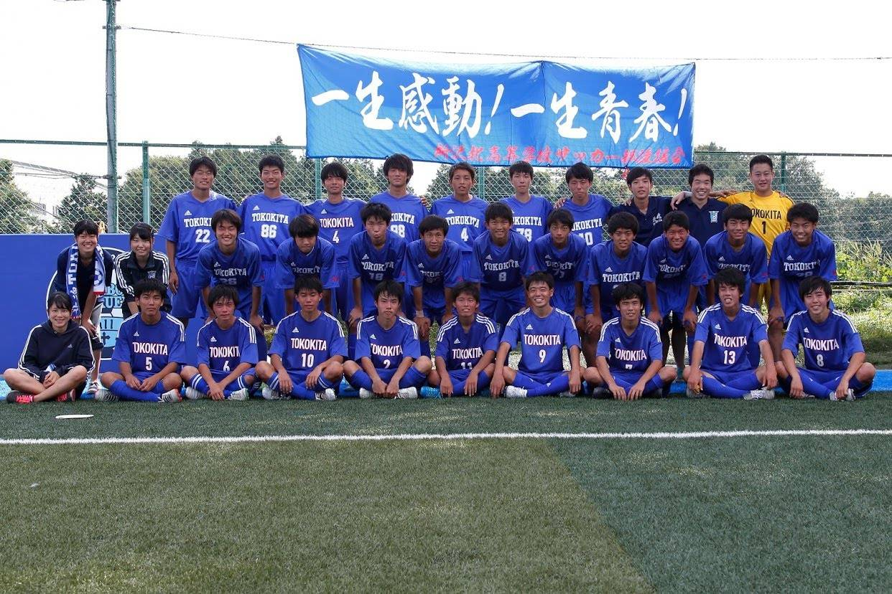
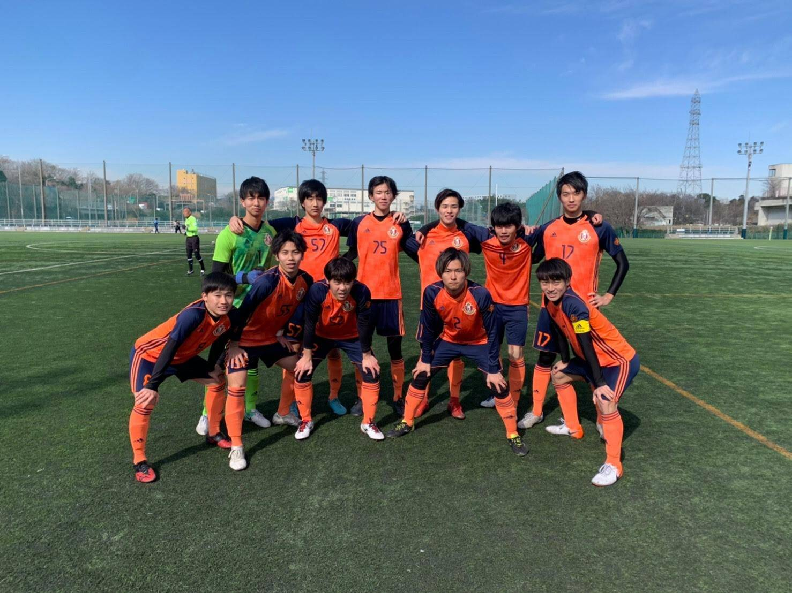

サッカー
高校サッカー
地元の公立高校に進学。小学生からサッカーを続けていたので、そのままサッカー部に所属して3年生まで活動していました。大きな成績は残せませんでしたが、毎年部活が鬼門としている選手権地区予選と突破し県大会に出場できたことはとても嬉しかったです。引退後は受験勉強に全力を注いで大学受験を乗り越えました、入試直前は毎日10時間以上勉強しとてもきつかったので二度とやりたくないと思いました。笑
サークル活動
大学でもサッカーがしたいと思い、サークルに入りました。早稲田のサークル少し怖そうだなと思っていたのですが先輩も同期も真面目でいい人たちで安心しました。 自分たちは１６期生なのですが自分たちの代でリーグ初優勝することができました。とても嬉しかったです！